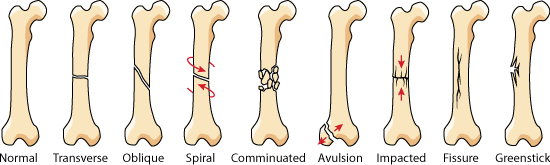

Broken Bones
Types of broken bones:

Broken bones are also known as fractures in the medical field. The bones are actually cracked, chipped or broken. Broken bones can be caused by direct blows to the bone. Repetitive forces can cause stress which can break the bone. Broken bones are usually the result of accidents such as those involving automobiles, motorcycles and other vehicles. A broken bone can result in heavy bleeding, bruising, or swelling of the limb.
Older people are more susceptible to broken bones as well as children. Children have softer bones while adults have more brittle bones. Children on the other hand are still growing so healing is less of an issue. So while an adult can take months to have a bone heal, children can heal in just a few weeks.
Prevention is common sense and protection. Wear protective gear when playing different kinds of sports or any kind of physical activity. Take proper caution, a fall can be all it takes to break a bone. Take proper caution with sports and other physical activities. Wear appropriate protection and act responsibly. Also watch areas of friction or anything that may make you a fall. This is especially important for adults with children, people who enjoy the outdoors, older people with weaker joints or a poorer sense of balance, and anyone who is very active. In the house, non skid mats can be used in wet areas like bathrooms. Handrails can be installed to assist in staircase use. Avoid using throw rugs.
If the person experiences any tingling sensations or severe pain, you should contact 911 immediately. If the break or fracture is suspected to have affected the head, neck, or back, you should call emergency services for professional help.
If you encounter someone you suspect has a broken bone, try to keep the person calm, comfortable, and still while you examine the injury. DO NOT move the person unless you believe non movement will create worse injury. If the break has caused the bone to pierce the skin or to result in heavy bleeding, swelling or bruising, you should contact emergency services immediately. Try to control and stop any bleeding that has resulted from the break. Apply pressure and cover up the injury with either a bandage or clean cloth. You may want to apply ice packs to the surrounding area to reduce any swelling that might be occurring. Do not apply the cold object directly but instead wrap it in cloth first. Clothing can work as well. Try to sanitize or rinse it very gently. ONLY if you have been trained should you attempt to splint the injured limb. After calling for emergency services, immobilize the area of the body where the injury took place. Keeping the person still and calm will help prevent further damage to the area as well as keeping them from going into shock. Does it look like the person is in shock? Are they breathing in short rapid breaths or do they look like they will pass out? If the injury is not leg based, you can try laying them down and raising their legs. Their feet should be about a foot above their head. Cover them in a blanket.
There are several ways to promote healing if you have a broken bone. You can try to hold off smoking. Certain diets and nutritional supplements such as taking vitamin D and calcium. High glucose can slow down healing. The area of the fracture must be immobilized. Moving that area will slow healing down or worse. Surgeons will provide necessary elements to keep it immobilized, be a caste, plates, wires, etc. It can take several weeks to several months for a broken bone to heal. The pain will usually stop much earlier than the time it takes to heal. A doctor will recommend specific exercises to help sustain and build muscle strength, flexibility and joint motion.